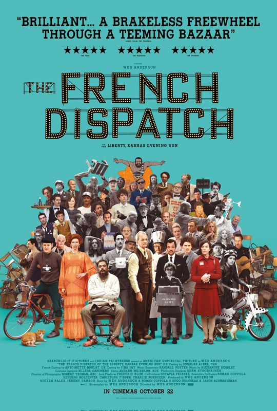
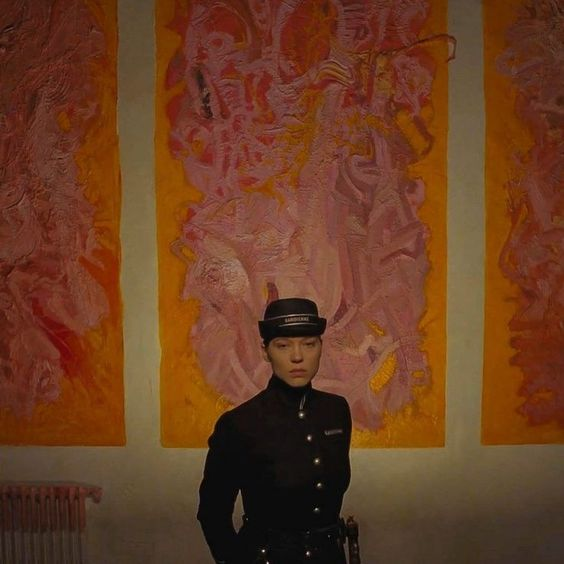
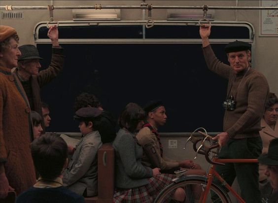
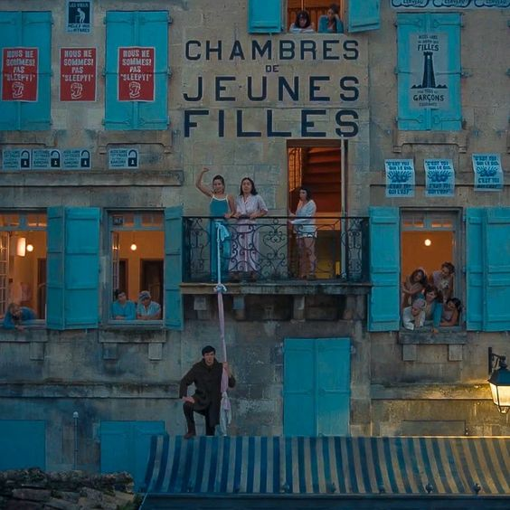
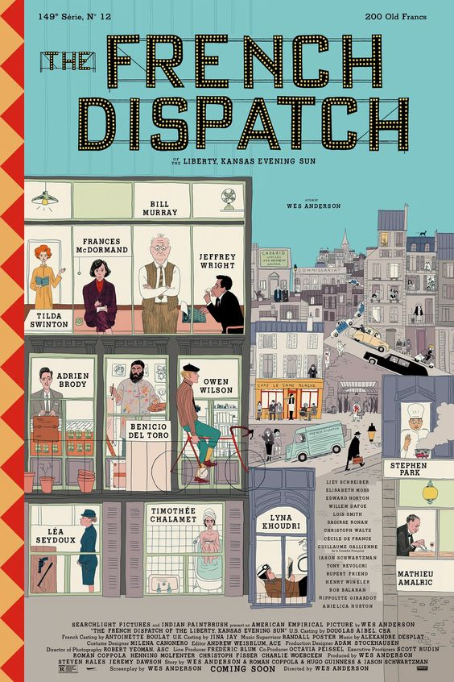

"Maybe with good luck we'll find what eluded us in the places we once called home."
Storyline
Faced with the impending dissolution of The French Dispatch, a factual weekly report on various subjects, old-school editor-in-chief Arthur Howitzer Jr. assembles the crème de la crème of the magazine's loyal expatriate journalists for one final issue. Against the backdrop of picturesque Ennui-sur-Blasé, Paris, France, three main articles unfold, pivoting around tormented genius artists, statuesque prison officers, flamboyant critics, moody idealists, conflicted ace reporters, legendary chefs, and, of course, the police.




Photos
